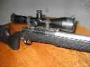

| [Ballistics] | [Bibliography] | [Downloads] | [JBM] | [Links] | [MPM] | [PM] | [Personal] | [Software] |

Caliber: 0.308 Obermeyer (.308 Winchester with throat angle cut
for 168 gn Sierra MatchKing)
Action: Remington 700
Barrel: Pac-Nor, 1:12 twist, heavy varmint taper.
Stock: McMillan A-4 (internet special)
Trigger: Arnold Jewel (what else?)
Scope: 4.5-14x Leupold Tactical with 50mm Objective
Badger rings and bases
Weight: 18 pounds
0.308 Obermeyer Wildcat is nothing more than the standard .308 Winchester with the throat angle cut to match the ogive angle of the Sierra 168 gn Matchking. The reamer is available from JGS.
I trued the action using a set of Manson reamers and added a heavier recoil lug (opened up with a Manson reamer). The reamers are really slick, you get very nice work in less than half an hour with almost no setup time. After the action, I trued the bolt (lathe work) and lapped the locking lugs.
As always, I used a Jewel trigger is very nice. The trigger is set to 3-4 pounds and is very crisp. The trigger shoe is custom made by me.
The stock is the newer McMillan A-4. I got this one as an internet special for about $500 with all the extras added. The barrel channel was not cut for the barrel when I received the stock. I thought I was going to have a hard time opening it up, but I used a piece of aluminum round stock covered in 30 grit (gravel) sand paper and it worked very well and only took about 15 minutes. Note the recessed swivels on three sides.
Miscellaneous: Tubb Titanium firing pin and spring from Sinclair.
I haven't been doing much to the brass except keeping it trimmed and resized. I wanted to see what kind of performance I could get without doing all the usual case operations. My tightest group so far is about 2 inches at 300 yards for five shots.
My current load is 40.5 grains of ACC XMR-4064 with Winchester large rifle primers and of course the 168 gn Sierra Matchking. I don't crimp the cases.
| Last update 13 July 2004, Copyright © 1996-2004 JBM [V] |